Installation
Sommaire
Install moderne...où je vous tiens un peu par la main..
Media
- Sur le CDROM acheté (c'est bien)
- Sur l'image ISO du CD , en i386(c'est légal, mais c'est moins bien, vous ne participez pas financièrement au projet)
- En boot PXE (c'est classe!)
Que faire ?
install pour installer
{kind=link}
Clavier
fr pour le clavier français.
{kind=link}
Nom
Soyez originaux...
{kind=link}
Réseau
On ne rigole plus,là.
Pour chaque interface détectée vous allez successivement :
- Choisir l'interface
{kind=link}
- Choisir le mode d'attribution des adresses IPv4 (dhcp ou fixe)
{kind=link}
- Choisir le mode d'attribution des adresses IPv6 (rtsol ou fixe. Et oui dhcpv6 n'est pas implémenté apparemment..Et tant mieux, ça semble pas très nécessaire ce truc.)
{kind=link}
- Quand vous avez fait le tour, done vous permet de terminer.
{kind=link}
- Si vous le souhaitez,un petit tour de shell pour faire quelques modifs persos.
{kind=link}
Password root
RAS
{kind=link}
Quelques services ...importants!
AMHA, il faut démarrer sshd (connection sécurisée).
Quant à ntpd (serveur de temps), ça ne coûte pas.
{kind=link}
Du X sur un serveur ????
Même si vous ne démarrerez jamais de serveur X11 sur votre serveur, j'ai eu quelques mésaventures en répondant non ici.
{kind=link}
La sortie, c'est par où ?
Si vous avez une machine headless (sans sortie VGA, type Soekris), c'est intéressant de rediriger la sortie vers le port série.
{kind=link}
Fuseau horaire
Défini par défaut. En dehors des amis québécois, ça devrait aller.
{kind=link}
Bonne habitude
Qui travaille en root toujours, aura des soucis un jour !
Un second user non privilégié, c'est pas mal...
{kind=link}
Le disque !
Petite nouveauté de ce côté avec la 4.8. Une étape de compatibilité avec les autres OS...
On choisira tout le disque: whole.
Puis custom layout (Agencement personnel).
{kind=link}
{kind=link}
{kind=link}
{kind=link}
{kind=link}
{kind=link}
{kind=link}
{kind=link}
{kind=link}
Post Install
Installer un environnement de travail minimal
- Variables d'environnement :
Coller ça dans /etc/profile
PATH=/sbin:/usr/sbin:/bin:/usr/bin:/usr/local/bin:/usr/local/sbin:/usr/X11R6/bin if [ "$BASH" ];then PS1='\u@\h:\w:\$> ' else if [ "`id -u`" -eq 0 ]; then PS1='# ' else PS1='$ ' fi fi TERM=vt220 ALT_PKG_PATH=ftp://ftp.irisa.fr/pub/OpenBSD/$(uname -r)/packages/$(uname -m)/ PKG_PATH=http://ftp.openbsd.org/pub/OpenBSD/$(uname -r)/packages/$(uname -m)/ export PATH export PATH HOME PS1 TERM PKG_PATH ALT_PKG_PATH umask 022
Pour que ce fichier soit lu, il faut vous déconnecter/reconnecter...Pas de reboot, non ,-)
Changer le shell d'un utilisateur
pkg_add bash chsh -s /usr/local/bin/bash user echo 'export PS1="\u@\h\[$(tput bold)\]:\[$(tput sgr0)\][\t]\[$(tput bold)\]:\[$(tput sgr0)\]\w:\[$(tput bold)\]\\$\[$(tput sgr0)\]>\[$(tput sgr0)\]"' >> .bashrc exit
Ou jouer avec les possibilités de bashrc generator
Installation des ports
wget ftp.fr.openbsd.org/pub/OpenBSD/5.5/ports.tar.gz wget ftp.fr.openbsd.org/pub/OpenBSD/5.5/SHA256.sig signify -C -p /etc/signify/openbsd-55-base.pub -x SHA256.sig ports.tar.gz cd /usr tar zxvf /root/ports.tar.gz
Oubli de fileset durant l'install !!
Vous tenez d'installer un paquet par pkg_add et l'on vous répond qu'il manque telle ou telle librairie :
Can't install XXXX because of libraries |library X11.15.2 not found | not found anywhere |library Xpm.8.0 not found | not found anywhere |library freetype.20.0 not found | not found anywhere Direct dependencies for XXXX resolve to YYYY ZZZ Full dependency tree is YYYY ZZZZ RRRR
Il faut réinstaller un fileset openBSD : 1. Soit vous faites un upgrade avec le CD d'install 2. Soit à la main:
mount -t cd9660 -r /dev/cd0a /mnt/ cd /mnt/5.4/amd64 tar -C / -xzvphf xbase54.tgz ldconfig -m /usr/X11R6/lib
Ménage dans l'arbre des paquets
Vous avez installé un paquet (et donc ses dépendances) et vous vous en débarassez
pkg_delete paquet
OK, mais qu'arrive-t-il aux dépendances ?? Pas de panique ;
pkg_delete -a
Ancienne doc d'install (en version 3.0 !!!)
Installation à partir du Cdrom d'OpenBSD
Si l'installation directement avec le cdrom n'est pas possible sur votre machine, vous pouvez créer une disquette d'installation
pour faire [Disquette.htm votre installation à partir de la disquette].
Le cdrom que vous devez vous procurer est un cdrom boootable.
Avant de commencer :
- Puisque vous avez achetévotre CD d'OpenBSD, vous trouverez dans la jaquette une explication très détaillée de cette installation.
- Vous devez vérifier que votre machine correspond au besoin de l'installation. A savoir taille du disque, carte réseau.
|
Clavier Français |
Equivalent Anglais |
Clavier Français |
Equivalent Anglais |
|
§ |
/ (ou le clavier numérique) |
: |
. (ou le clavier numérique) |
|
? |
m |
) |
- (ou le clavier numérique) |
|
_ |
* (ou le clavier numérique) |
q |
a |
|
Shift § |
? |
" |
% |
Une fois le boot lancé, vous allez obtenir
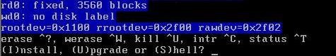
Sélectionner I pour lancer l'installation.
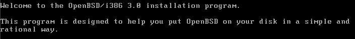
Puis première demande
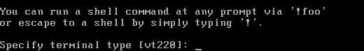
Lorsque vous avez une question et entre crochet une réponse, vous pouvez vous contenter de valider. Ce qui est le cas ici.
Puis arrive la partie la plus compliquée, à savoir les disques.
Vous pouvez spécifier ici le clavier Français. Le luxe.
Il vous demande Do you wish to select a keyboard encoding table [n] Répondre y puis choisir le clavier fr.
Partitionnement
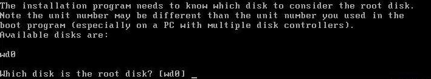
{kind=link}
{kind=link}
{kind=link}
{kind=link}
Disques
Ici je n'ai qu'un seul disque (wd0). Cela peut donc changer suivant votre configuration, si vous en avez deux le nom sera wd1, si les disques sont des disques scsi le nom sd0.....
([Disques.htm Plus d'informations sur les disques]).
Encore une fois je ne fais que valider.
Puis il vous demande, si vous voulez utiliser la totalité du disque
(Do you want tu use the *entire* disk for OpenBSD? [no])
Si votre réponse doit être positive taper yes et valider. Si vous souhaitez faire du multi boot, valider simplement (j'ai répondu yes pour ma démonstration).
Puis arrive le moment de créer vos partitions
Disklabel
{kind=link}
Vous vous retrouvez avec un prompt, qui va vous permettre de faire cela. Pour avoir de l'aide tapez ?
Voici quelques commandes les plus utiles.
p pour afficher les tables de partitions
d a pour détruire la partition a (d b pour détruire la b....)
a a pour créer la partition a (a b pour créer la partition b)
q quitte et sauvegarde les changements, en passant à la suite de l'installation (attention au clavier !).
Voici le résultat de la commande p
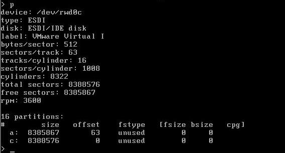
{kind=link}
Je veux détruire la partition a pour commencer avec du tout beau tout neuf. Attention il ne faut surtout pas détruire c qui correspond à votre disque.
Donc si vous souhaitez par la suite créer plusieurs partitions, les premières seront a, b, puis d jusqu'à p.
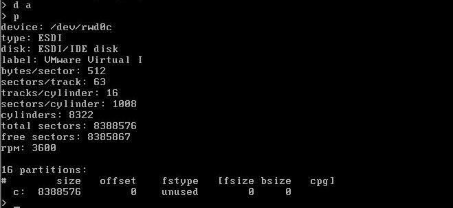
{kind=link}
Puis je recrée avec la commande a suivi du nom de la partition a, b, d, ...etc.Attention ! Le noyau doit Toujours se trouver dans une partie du disque matériellement « accessible ». OpenBSD sait gérer jusqu'à 128 Go. Mais lors du démarrage c'est la bootROM du BIOS qui lance le chargeur de démarrage (NTLDR, LILO,GRUB,...). Or cette ROM est limitée à 8 Go, voire 504 Mo pour les plus vieilles machines (I386). Lors de la primo installation, pas de problème, le processus d'installation place le noyau (/bsd) dans la bonne limite. Mais lors de la première [OpenBSD-maj.html#2.2 recompilation] , la recopie de /usr/src/sys/arch/i386/compile/MonKernel/bsd vers /bsd n'engendre pas d'écrasement du second par le premier, mais une copie à un autre endroit du disque, une suppression du précédent et une mise à jour de la table des inodes (la table d'allocation d'OpenBSD). Or, cette copie se fera dans la partition /. Si celle ci sort de la limite adressable par le BIOS, votre machine ne redémarrera jamais. Quand ca vous arrive en SSH, vous etes un peu obligé de vous déplacer (du vécu !)
Donc , vous devez spécifier une partition / dans la limite de l'espace adressable par le BIOS :
-> la partition a sera /
-> Sa taille sera inférieure à la plus petite des deux valeurs suivantes : 8 Go ou à 1024 cylindres (selon le mode LBA ou LARGE).
</span>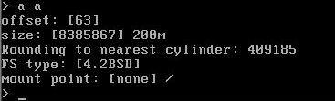
{kind=link}
Vous devez indiquer la taille ici 200M pour 200 Mo, si vous travaillez en Go mettre 2G pour 2 Go.
Puis il vous demande le nom du point de montage, le premier doit être / (root).
Il vous faut encore la partition de swap, et éventuellement les autres partitions. Cet ordre ne devrait pas être modifié (/, puis swap, puis les autres)
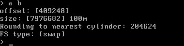
Idem pour la partition /var, puis pour les autres.
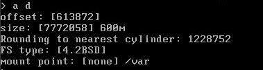
{kind=link}
{kind=link}
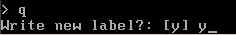
On arrive à la page suivante :
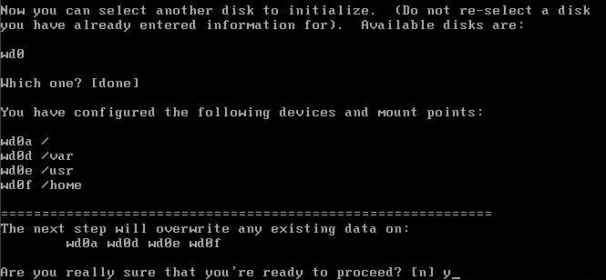
En répondant yes vous lancez la création du filesystem.
Puis on passe à la partie finale :
Configuration du réseau
Configure the network? [y]
Je pense que vous souhaitez avoir le réseau, donc validez.
{kind=link}
{kind=link}
Puis il vous demande le hostname (Enter system hostname)
J'ai répondu soleil.
Puis on configure la carte réseau. Attention le nom de la carte (ici le1) dépend du nom de la marque de votre carte réseau.
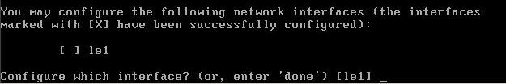
Validez simplement.
{kind=link}
Il vous demande alors l'adresse IP de la machine ou si vous souhaitez utiliser un serveur dhcp indiquer simplement dhcp, puis le nom symbolique (il vous propose le hostname que vous avez précédemment donné par défaut, puis le masque, puis le nom de domaine et enfin la route par défaut, l'adresse IP de votre serveur DNS, et il vous demande si vous souhaitez utiliser le serveur de nom maintenant.Validez.
Si vous avez d'autres cartes réseau, vous pouvez les configurer maintenant ou le faire après. D'ailleurs vous pouvez toujours [Reseau.htm modifier la configuration réseau après l'installation]. Ce qui est important dans un premier temps, avoir une connexion avec l'internet pour rapatrier les sources.
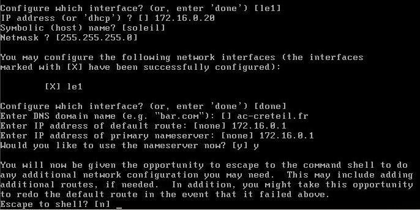
{kind=link}
Si vous souhaitez ici prendre la main sur le shell afin de configurer manuellement d'autres cartes vous pouvez le faire ici, ou mieux le faire après.
Mdp
Il vous demande de rentrer le mot de passe du compte root. Attention au clavier anglais.
Il vous demande alors si vous souhaitez installer l'interface graphique. Ce n'est pas mon choix ici (jamais sur nos serveurs).
J'ai donc répondu non à cette question.
Installation du système
Il vous demande alors depuis quelle source vous souhaitez installer les sources. Comme j'ai le cdrom, je préfère faire cela depuis le cdrom, puis faire la mise à jour immédiatement après. Vous pouvez toujours faire le choix de le faire par ftp, mais attention au débit pour cela.
Si vous faites l'installation via ftp, il vous demande si vous passez par un proxy, puis si vous souhaitez utiliser le mode actif du ftp, ce que je ne vous conseille pas, surtout si vous avez un Firewall devant, puis vous propose de lister les serveurs ftp disponibles. Tapez q pour quitter la liste, mais choisissez le serveur ftp que vous souhaitez utiliser.
Server IP addresses, hostname, or list#? []
Indiquez le numéro du serveur ftp que vous voulez utiliser, et validez les autres questions. J'ai rencontré des problèmes avec certains serveurs FTP, avec impossibilité de trouver les packages. Il suffit de choisir un autre serveur ftp.
Le reste est après identique.
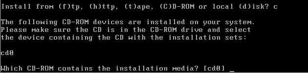
Puis il vous demande le répertoire ou se trouve les packages. Il propose [/3.0/i386], vous n'avez qu'à accepter.
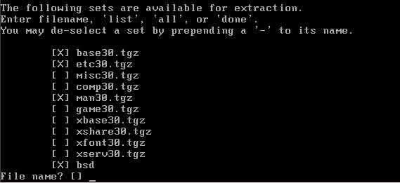
Vous arrivez sur la liste des packages à installer.
taper all pour les sélectionner tous
+mis* pour sélectionner le package misc30.tgz
-mis* pour l'enlever.
Ici je sélectionne en plus misc et comp. Vous en avez en fait besoin pour compiler ou mettre à jour votre machine.
On peut les ajouter après, mais il est difficile de s'en passer, donc autant le faire tout de suite. Une fois sélectionné ce que vous voulez faire :done.
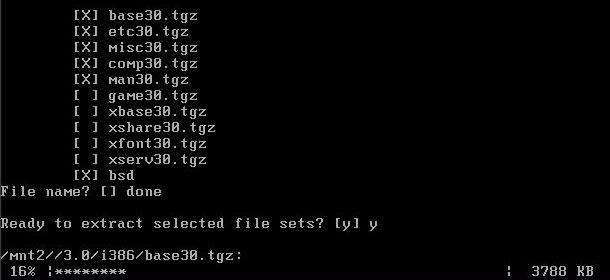
{kind=link}
{kind=link}
{kind=link}
Si vous souhaitez en installer par la suite un cd / && tar xvfzp game30.tgz pour installer les jeux par exemple.
Configuration de la zone horaire
Puis il ne vous reste plus qu'à configurer la zone horaire
Répondre Europe et valider.
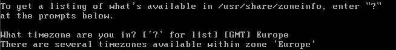
{kind=link}
Puis Paris pour la sub-timezone et valider (ou plus rapidement Europe/Paris)
Il construit le répertoire /dev
Puis le mot de la fin :
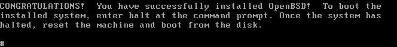
Un reboot de la machine, vous ne pouvez rien faire dans cet état.
Et après cela certain vont dire qu'il est compliqué d'installer OpenBSD...;-))
{kind=link}
Debug
Au redémarrage il peut vous arriver un problème. OpenBSD refusant de booter (Avec des machines Dell entre autre) Voir [Disques.htm ici] pour une solution. Ce bug a été corrigé sur la 3.1.
Par la suite dans l'ordre pour finir d'installer la machine il vous faut :
[Console.htm#Clavier%20francais Mettre le clavier en Français (version < 3.1)]
[Console.htm#Cr%E9er+un+premier+compte Créer des comptes autres que le seul compte root]
[OpenBSD-maj.html Mettre à jour votre machine (sources - ports)]
[Console.htm#Rendez%20moi%20mon%20shell Éventuellement changer le shell de votre machine]
[Console.htm#Mettre+%E0+l%27heure+votre+machine Mettre à l'heure votre machine]
[Console.htm#Modifier+le+prompt+du+bash+par+d%E9faut Modifier le prompt]
[applications.html Installer les applications dont vous avez besoin via les packages ou via les ports]
[Console.htm#Modifier+SSH+par+d%E9faut Configurer les fichiers de ssh]
[Fichiers_Conf.htm Adapter les fichiers de configurations]
[Disquette.htm Créer une disquette de secours]
[Console.htm#Les+d%E9mons+lanc%E9s+par+d%E9faut Contrôler les processus qui tournent par défaut ][Console.htm#Modifier+l%27%E9diteur+Vi+par+d%E9faut
Améliorer l'éditeur Vi par défaut avec VIM]
Pour automatiser l'installation ,voir [Disquette.htm#4 ici].
© Philippe & Philippe